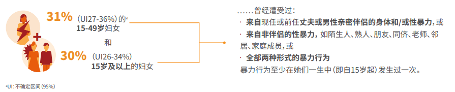

16年前，联合国大会通过了一项决议，呼吁加紧努力消除一切形式的暴力侵害妇女行为，并请联合国秘书长建立了一个数据库，以此说明暴力侵害妇女行为的程度、性质和后果，探讨消除暴力行为的政策方案所产生的影响和效力。2009年，这一数据库正式开发和启动，被称为“联合国秘书长关于暴力侵害妇女行为的数据库”。2016年，《2030年可持续发展议程》通过的背景下，联合国妇女署更新并重新设计了该数据库，并将其更名为“全球暴力侵害妇女问题全球数据库”。

呼吁建立暴力侵害妇女行为数据库的16年后，新冠疫情震荡了全球，压在女性身上的暴力行为在疫情背景下只增不减。世界卫生组织曾指出，亲密关系的暴力发生率会在灾难发生后普遍增加。新冠肺炎的肆虐激化了两性关系间的危机，此时此刻，家庭暴力的激增成为我们社会乃至整个世界不能忽视的问题。
凌虐不是爱，彰显霸权不是爱，无视矛盾也不是爱，在家庭暴力以及对女性的种种暴力行为背后，歧视与物化需要被发现，共情与同理心需要被呼吁，现状更需要被重视，并凝聚众人力量积极改变现状。
如何理解女性所经受的暴力，沉甸甸、实实在在的数据是最直观的、最全面的“窗口”之一。至今，全球已有多个数据库对暴力侵害妇女的行为进行了说明与印证。本期，Avoice将通过大数据，述说围绕全球女性的暴力行为，这些数据来自权威数据库，而数字的背后，则是无数女性赤裸裸的人生遭遇，是无数女性拼命挣扎，却难以逃离的泥淖。
冰冷的不是数字，是暴力
早在1993年，联合国就在大会第48/104号决议《消除对妇女的暴力行为宣言》中对“针对妇女的暴力行为（violence against women）”进行了概念界定，称其为 “对妇女造成或可能造成的身体、性或心理的伤害或痛苦的任何基于性别的暴力行为, 包括威胁、胁迫或任意剥夺自由, 无论其发生在公共还是私人生活中。”至今，针对女性的暴力行为仍无以计数……媒体曝光的只是冰山一角，数据库所记录的庞大数字背后，是难以想象的黑色世界和不忍触碰的层层伤疤。01 性暴力：全球1/3妇女曾遭遇
2021年，联合国发布了完整版报告《针对妇女的暴力行为的2018年估计值》，这是联合国在2015-2030年可持续发展目标时期，调查访问全球137个国家及地区（包括41个高收入和96个中等收入、低收入国家及地区）的1266758位女性，首次针对妇女的暴力行为进行的估算。数据直观的印证，针对妇女的暴力行为仍然高发，如今，针对15岁及以上女性的暴力行为已是一个全球性、大规模流行的公共问题，影响到数以亿计的妇女。

该报告主要估计了亲密伴侣暴力和非伴侣性暴力两种类型的暴力。数据显示，亲密伴侣暴力，即丈夫或男性亲密伴侣的（身体、性或心理）暴力行为是全球最为普遍的针对妇女的暴力形式。

报告统计，在2018年约有7.36亿至8.52亿的15岁及以上的妇女（约占全球妇女人数1/3）终身至少经历过一次来自现任或前任丈夫或男性亲密伴侣的身体和/或性暴力或来自非伴侣的性暴力，如陌生人、熟人、朋友、同侪、老师、邻居、家庭成员或全部两种形式的暴力。此外，亲密伴侣暴力发生的时间较早，据估计，在15岁到19岁这一最年轻的年龄组中，几乎四分之一结过婚或有过伴侣的少女终身至少遭受过一次亲密伴侣的身体和/或性暴力，而且16%的15岁至24岁的少女和年轻妇女在过去12个月曾遭受过亲密伴侣暴力。
02 推攘、掌掴：1/5的欧盟女性曾遭受
在欧盟范围，欧盟曾于2014年3月，通过采访28个成员国的42000名妇女，统计这些女性曾遭受的身体暴力、性暴力、精神暴力情况和尾随跟踪、性骚扰的经历，发布了第一个针对妇女暴力的调查《针对妇女的暴力：一项欧盟范围内的调查》。
该调查显示，就非伴侣而言，每5名女性中就有1名（22%）曾经遭受过身体暴力，这些身体暴力的行为五花八门，如推攮、掌掴、被东西砸、被拽头发、被踢或用拳头击打、被烫伤、被掐或勒住脖子、被刺伤或割伤，以及被拽着头撞东西。
这些恐怖的身体暴力遭遇，往往并非一次，该数据显示，遭受过推攮的4,872名受访者中，约有19%的人曾遭受过6次或6次以上的暴力行为；遭受过掌掴的3,292名受访者中，曾有20%的人遭受过6次或6次以上的暴力行为。
03 后续追责：75%的男性未承担后果
调查表明，（亲密）伴侣暴力普遍存在，在有过伴侣的女性受访者中，39%报告了自己曾遭受过来自亲密伴侣的肢体暴力和/或性暴力。52%的男性受访者承认有过对亲密伴侣实施的暴力行为，而在曾强暴过女性的男性中，75％没有承担任何法律后果。
至于强暴动机，则以“性特权”——一种认为男性有权利与女性发生性关系，而无视女性同意或不同意的想法（86%）、找乐/无聊（58%）、生气/惩罚（43%）和喝了酒（24%）为主。

数据还显示，在所有受访男性中，73%认为男人应该强硬，52%支持男人使用暴力维护名誉；72%认为男性在家庭中应该是重要事情的决策者。这些所谓的“男性气质”和暴力行为有着紧密的关联。
此外，这份调查还显示，在曾实施过强暴的男性中，有67％在20岁到29岁时就实施了第一次强暴，有24％在15岁到19岁实施了第一次强暴，这些数据表明，预防性暴力和尊重女性的教育意识需要在青少年时期就开始。
看见暴力，消除暴力，爱无暴力
针对女性的暴力行为及不公正对待行为的权威数据远不仅此，在新冠疫情大流行期间的最新数据也亟待相关机构展开调查与研究。 根据联合国妇女署2022年最新数据，在新冠疫情下，除了面对更高几率的暴力行为，女性还面对着更难接种疫苗、更难获取食物，承担更多无偿照料和家务劳动、收入减少等境遇，多种境遇改变的数字背后，是每一位遭受暴力的女性个体流下的泪水。 在世界、在全球，对女性的暴力依旧存在，媒体上有关家暴等的议题仍层出不穷，世界对女性不合理的体制仍旧存在，如何真正“看见”女性、及时有效的帮助女性，仍然任重道远。 就像开头所说，凌虐不是爱，彰显霸权不是爱，无视矛盾也不是爱，我们需要建立一个无暴力、有同理心、真正平等的爱的共同体。《女性与权力》一书中，玛尔·比尔德写到，“你无法将女性轻易置于一个已经被男性化编码的架构里，你必须改变架构本身。”我们期待一个爱无暴力的世界的到来，愿Avoice和你，都能成为照亮这个世界的“光”。参考文献
- 联合国妇女署公众号《来自联合国，最新版 “针对妇女的暴力行为全球流行率估计”报告发布！》 https://mp.weixin.qq.com/s/O285OYtko4nEBtLRDb6CNA
- 欧盟《针对妇女的暴力：一项欧盟范围内的调查》 https://fra.europa.eu/sites/default/files/fra_uploads/fra-2014-vaw-survey-main-results-apr14_en.pdf
- 全球暴力侵害妇女问题全球数据库 https://evaw-global-database.unwomen.org/en
- 第四期中国妇女社会地位调查主要数据情况发布，中国妇女研究网 (wsic.ac.cn)
- 联合国妇女署官网
- 搜新源公众号《并非男性都是施暴者，但是女性都生活在系统性恐惧中 | 搜信源》
Avoice海外华人女性保护项目作为华人女性坚实温暖的后盾，为Sally提供后续的咨询和帮助。
同时，Sally也成为了Avoice的志愿者，在我们的线上华人女性社群中，为其他女性提供一对一的咨询，并且将她的经验和能量传递给其他需要帮助的华人女性。